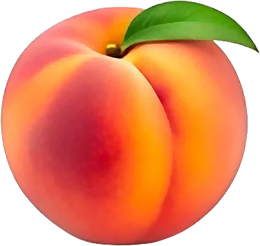

Pêche

Drupe juteuse à choisir parfumée et souple sous le doigt.
- Saison : juin, juillet, août, septembre
- Pleine saison : juillet, août
- Famille botanique : Rosacées
Histoire
Originaire de Chine, où elle est cultivée depuis des millénaires, la pêche est arrivée en Europe par la Perse, d’où son nom latin Prunus persica. Les Romains la diffusent en Gaule. Louis XIV la fait cultiver à Versailles, dans le Potager du roi.
Origine et régions de production
La pêche française pousse dans les vallées ensoleillées :
- Auvergne-Rhône-Alpes (Drôme, Ardèche)
- Provence-Alpes-Côte d’Azur
- Occitanie (Roussillon)
La pêche de vigne, petite et parfumée, est une variété ancienne très recherchée.
Bienfaits
La pêche est un fruit d’été juteux et léger :
- Hydratante : Environ 87 % d’eau.
- Peu calorique : Environ 40 kcal/100 g.
- Caroténoïdes : Surtout dans les variétés à chair jaune.
- Fibres : Présentes dans la peau et la chair.
Variétés
- Pêche blanche : Très juteuse, parfum délicat.
- Pêche jaune : Chair plus ferme, légèrement acidulée.
- Pêche plate : Forme aplatie, très sucrée.
- Pêche de vigne : Petite, chair rouge sang, en fin d’été.
- Nectarine : Peau lisse, chair qui se détache du noyau.
- Brugnon : Peau lisse aussi, chair collée au noyau.
Conserver sans gaspiller
- Conservation : À température ambiante pour mûrir, puis au frigo : 3 à 4 jours.
- Congélation : Pelées, en quartiers, citronnées : jusqu’à 12 mois.
- Rien ne se jette : Les pêches trop mûres font une compote, un sorbet ou un smoothie. La peau parfume un sirop.